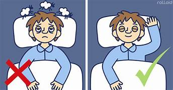

HABITOS QUE DAÑAN EL BUEN DORMIR
Estos son los 10 malos hábitos a la hora de dormir que remarcó la experta:
Despertarse la mayoría de las noches entre las 3 y las 4 A. M.
<
Experimentar sueños intensos y estresantes.
Sudoración excesiva.
Tener pensamientos acelerados antes de acostarse.
Sentir dolor en el hombro, cuello o muñeca al despertarse.
Sentirse cansado todo el día pero completamente despierto cuando llega la hora de dormir.
Dando vueltas y vueltas.
Rechinar los dientes por la noche.
Sobrecalentarse en la cama.
Sentirse agotado al despertarse.

regreso